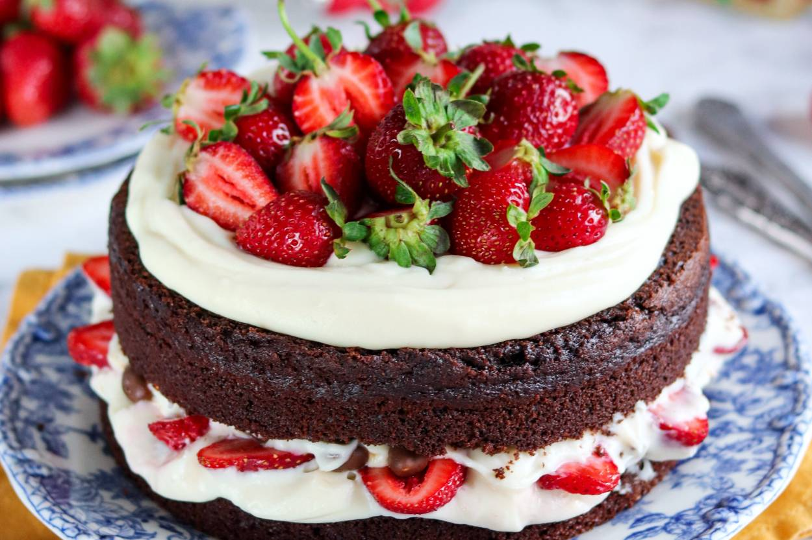

Cilekli Cikolatali Pasta

Çikolatalı Çilekli Pasta Tarifi İçin Malzemeler
Keki için:
- 3 adet yumurta
- 150 gram toz şeker
- 200 mililitre buttermilk
- 100 gram tereyağı
- 75 gram sütlü çikolata
- 15 gram kakao
- 60 mililitre sıvı yağ
- 50 gram un
- 2 paket vanilin
Kreması için:
- 3 su bardağı tam yağlı süt
- 1 adet orta boy yumurta
- 1 yemek kaşığı un
- 1 kutu krema
- 1 paket krem şanti